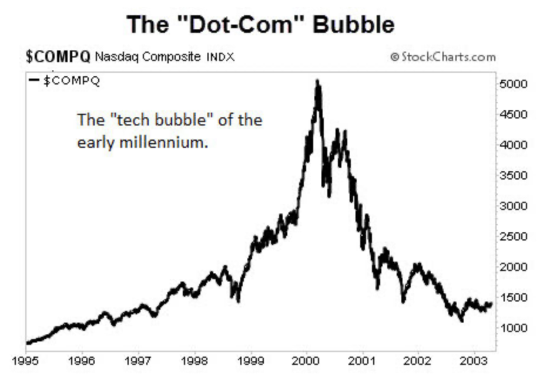
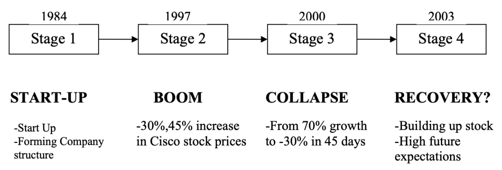
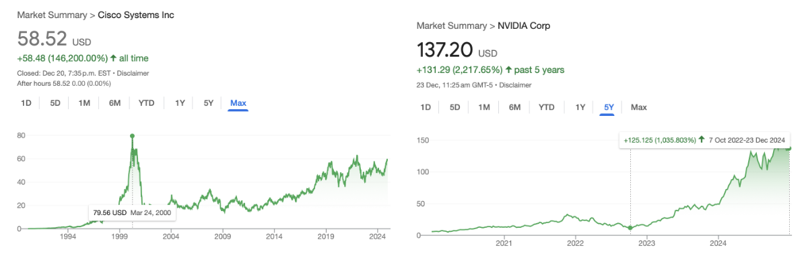
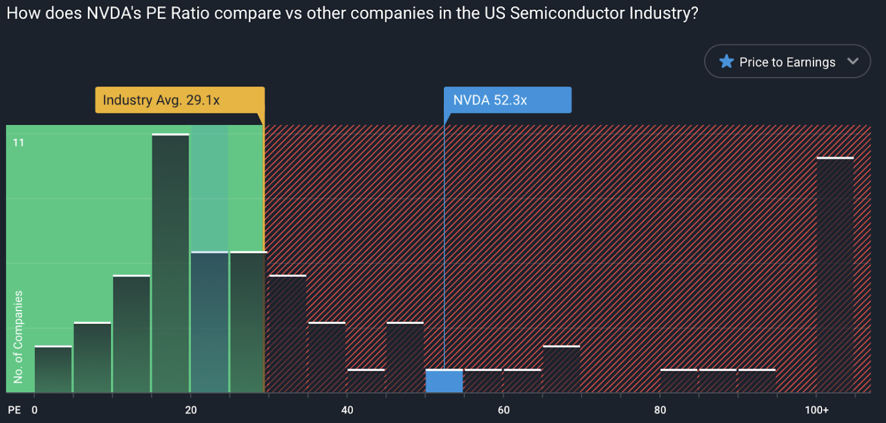
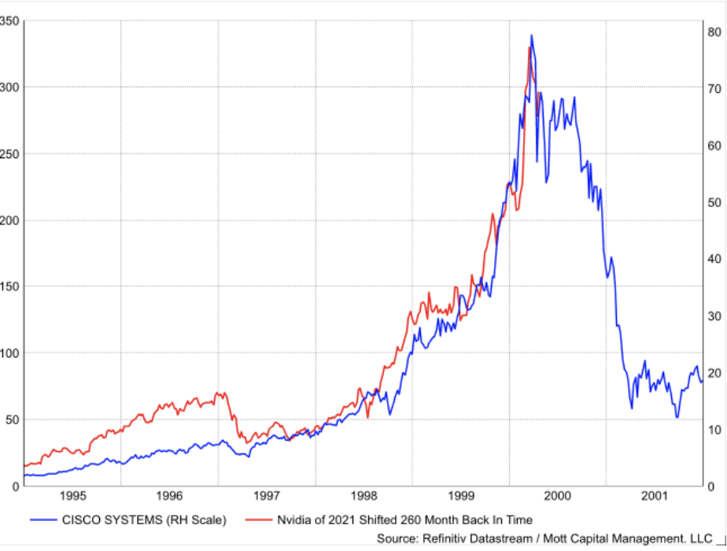
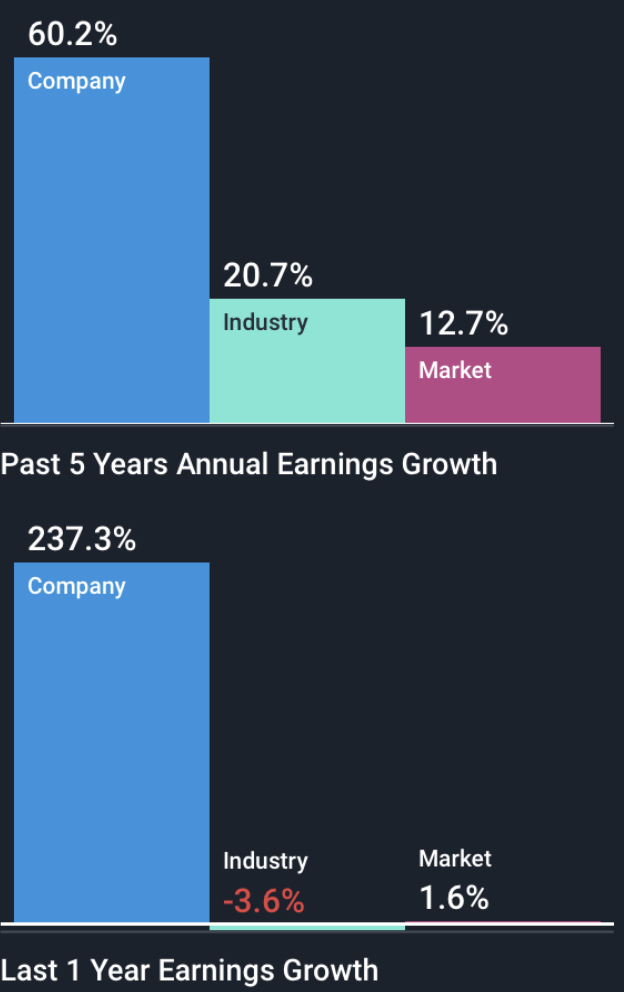

In light of last month's market sell-offs, many on Wall Street speculate that 2025 could be a repeat of 2000 in the finance world. That year, marked by the largest one-year decline in the NASDAQ, was commonly called the popping of the “dot-com” financial bubble. In the following 3 years, the NASDAQ lost 80% of its value.
While predicting an 80% fall in the tech sector would be rather excessive, speculations claim that the technology sector could witness a large fall once the gold dust surrounding AI fades.
NVIDIA, the second-largest company in the world, is the epicentre of this panic. At the forefront of the AI revolution, it represents the market pulse of the technology sector. Analyzing it could be key to understanding the market volatility as of late. In this article, we will be looking at NVIDIA and comparing it to Cisco, a frontrunner of the 1990s. Our goal- determine if the patterns of 2000 are repeating themselves, and identify whether a comparison to the early 2000s is warranted.
The 2000 Recession
But first, a bit of context. The “Dot-com” bubble was a market boom in the 1990s due to the increased prominence of the internet as computers became a household norm. The popularity of the internet and internet products led to a large inflow of funds from enterprising investors. Everyone wanted in on tech. The fear of missing opportunities led investors to overpay, buying shares at ridiculous valuations. Tech companies without functioning business models were able to raise billions from IPOs. The focus shifted from profits to revenue, with market share and revenue growth taking the forefront of financial discussion.
To top it off, the market had forgotten what a recession felt like. The last recession was the 1980s stagflation, and the market had seen 15 years of consistent market rise leading up to 2000. All these factors combined in a low interest rate environment, leading the markets to a frenzy well beyond rational.
This frenzy continued till reality came crashing down. Firms failed to turn profits and the companies started going under, and the “bubble” popped. In the panic that ensued, financial markets had one of their darkest periods and investors lost almost everything in 2 years.
Source: Investopedia
The scary part - replace “internet” in the above passage with “AI”, and it seems like the same situation is repeating itself today. The similarities get more eerie when you put NVIDIA and Cisco side by side.
The scary part - replace “internet” in the above passage with “AI”, and it seems like the same situation is repeating itself today. The similarities get more eerie when you put NVIDIA and Cisco side by side.
Company Backgrounds
For starters, both served as the “sellers of the shovels in a gold rush” - Cisco ‘sold’ the internet to the world through routers and switches. When global internet usage picked up in the late 1990s, it seemed as though everyone needed the internet, and by extension, everyone needed a router. Cisco was the best for internet services, and investing in it seemed like a no-brainer.
Source: University of Pompeu Fabra
NVIDIA also seems like a no-brainer, the world “needs” AI advancements, and what better than to invest in the enablers of AI - NVIDIA. Not only are they the largest sellers of the GPUs that accelerate AI, but they also have the most comprehensive suite of services that help corporations transform the digital world through intelligent computing.
The issue with no-brainers in the finance world is that a lot of people demand the limited available shares, causing prices to rise much above their value. That's exactly what happened with Cisco. The price of a share, a piece of owning the Cisco company, rose 600% in 1998-2000. The same metric rise can be seen in NVIDIA, whose shares have risen over 1000% in just 2 years. For context, the stock market, on average, only delivers about an 8% annualized return.
Source: Google Finance
Unfortunately, this overvaluation was the reason for its collapse. While Cisco grew rapidly, its growth numbers for the 3 years could not match the astronomical 600% share price increase. Thus, as soon as Cisco's growth started slowing, investors were ruthless in slashing down their optimistic image of the company. In the following year, the company lost over 80% of its value. Its stock chart is a scary sight for investors- it hasn’t reached its all-time high till date!
Is the same fate in store for NVIDIA? To answer that, we need to know if, like Cisco, it is overvalued or not.
Valuation Analysis of NVIDIA
On one hand, its valuation ratios are off the charts. Its price-to-earnings of 52 times is much higher than the market average. Investors value a dollar of NVIDIAs earnings twice as much as they value the same dollar of earnings from any other semiconductor company, as shown by the graph on the right. Similarly, its price-to-book-value ratio is concerningly high- a ratio of 50, up from a more normal ratio of 10 in 2019. A dollar invested into the share would give you only 2 cents if NVIDIA liquidated tomorrow.
Source: SimplyWallSt
These numbers tell a concerning tale- and it's why, when you plot the share prices of NVIDIA with that of Cisco, the graphs look almost identical before the large fall.
Source: Linkedin
On the other hand, valuations depend on the future growth potential. A PE of 100 is much more justified for a high-growth tech startup than a matured steel plant, as there is hope that the future earnings would justify the high price today.
Source: SimplyWallSt
And that is where it looks brighter for NVIDIA. A key differentiator between the two companies is how unusually strong NVIDIA’s underlying growth figures are- it averages earnings growth in one year that exceeds most companies’ 5 year earnings growth. While Cisco was averaging a 40% net income CAGR to reach a peak net income of $4 billion, NVIDIA has averaged a 60% CAGR and a net income of $63 billion.
That, combined with a large free cash flow balance to invest in research and development, and a near-flawless balance sheet give NVIDIA a large fundamental edge over Cisco. One of the main reasons for Cisco's collapse was the improper R&D allocation and its inability to identify new avenues of revenue growth. NVIDIA, in contrast, is allocating a significant sum of its earnings into new technologies to ensure they keep the company's key products competitive. New ventures such as its cloud solutions, small-business friendly services and developments in quantum computing provide crucial diversification while allowing the company to invest in future growth. The main focus is to limit the physical constraints of revenue growth. There are only so many GPUs they can sell, but there's virtually (pun intended) no limit to the services and software that come with GPUs.
Lastly, a key differentiator is the long-term market conditions. Although the markets have risen dramatically in 2020-2024, zooming out shows that the massive drops in 2000-2003 and 2008-2010 have balanced out the rise. As a result, the valuation multiples of the broader market are much lower in 2024 than they were right before the recession in 2000.
Conclusion
It is clear that NVIDIA is objectively overvalued, and is closely conforming to Cisco’s performance right before its crash. But to say it is as overvalued as Cisco was in 1999, and to imply that such overvaluation would guarantee a crash seems to be an unprofitable strategy. It's possible that NVIDIA can stay overvalued for years to come (as the markets did in 1995-2000) before eventually crumbling, or it could crash starting tomorrow morning- only the future knows for certain. However, we can conclude today that NVIDIA and the tech sector as a whole sit in a precarious position. NVIDIA has a high benchmark to live up to, or a fate similar to 2000 is not entirely off the cards.
Glossary of Financial Terms
Price-to-earnings Ratio: It is the ratio of price of a share in the company to the earnings per share. It is a key valuation metric that measures how much investors are willing to pay for a dollar of the company’s earnings.
Price-to-book Ratio: It is the ratio of the price of a share in the company to the book value of the company. The book value here refers to the leftover amount after tallying all the assets controlled by the company against all its liabilities as shown in the company balance sheet.
CAGR (Compounded Annual Growth Rate): The rate at which a particular figure compounds over time. A compounded annual growth rate of 20% (per year) in the share price of a company means that, share price of the company in the current year would be 20% greater than last year. For example, if the price starts at $100, it would be $120 in one year, $144 in two years and $172.8 in the third year.
Published by: Vivan Gandotra